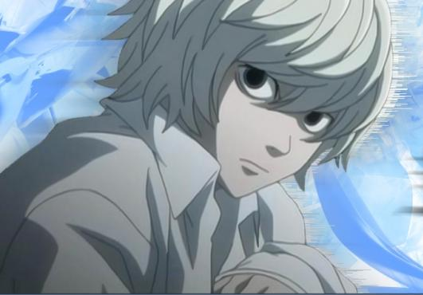

INICIO
CAPITULOS
DEATH NOTHE PERSONAJES
LIGHT YAGAMI
MISA AMANE
RYUK
REM
L. LAWLIET
NATHAN RIVER
MICHAEL KEEHL
KIYOMI TAKADA
TERU MIKAMI
Nayeli Ramírez Juárez todos los derechos reservados ©2015
|
NATHAN ALAN RIVER (NEAR)

Nació el 24 de agosto de 1991. Near es el menor de los dos
sucesores de L, criados en un orfanato llamado Wammy's House, de Watari para niños superdotados. Después de la muerte de L,
comienza su investigación del caso Kira. Partiendo de la recolección de pruebas durante un periodo de cuatro años, Near da
sus conclusiones al Presidente de los Estados Unidos y se revela a sí mismo como el verdadero sucesor de L. Poco después,
Near se convierte en el jefe de la SPK y continúa la búsqueda de Kira. Después de hacer contacto con "L" (Light Yagami), Near
comienza a sospechar que "L" es Kira.
Near es más frío que L y también mucho más calmado que éste, sin cambiar su expresión facial sea cual sea la situación,
esta alejado de las emociones, su interacción social es peor, no pudiendo desarrollar sus habilidades superiores si no tiene
a alguien ocupándose de él. Su manera de pensar es casi idéntica a la de L, siendo totalmente analítico y calculador. Near
tiene una manía, que en su caso es con los juguetes, ya que a lo largo de la serie se le ve jugar con distintos juguetes, entre
ellos robots, trenes, tiro al blanco, rompecabezas, dados, etc; al final de la serie Near encorrala a Light Yagami confirmando
que ciertamente el es Kira.
|